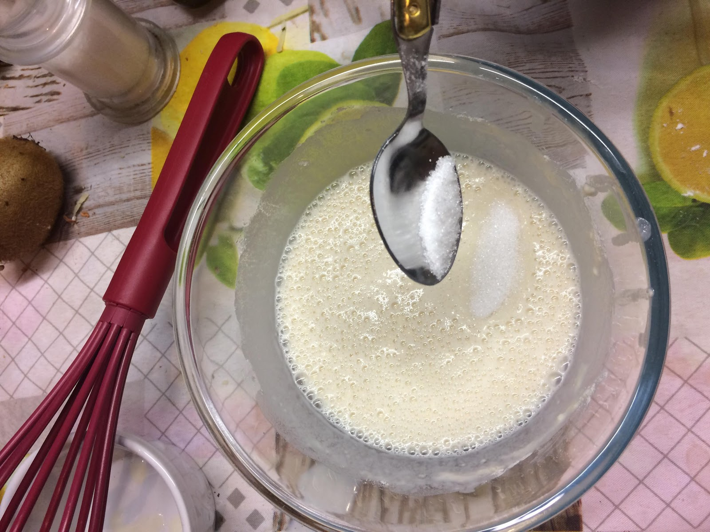
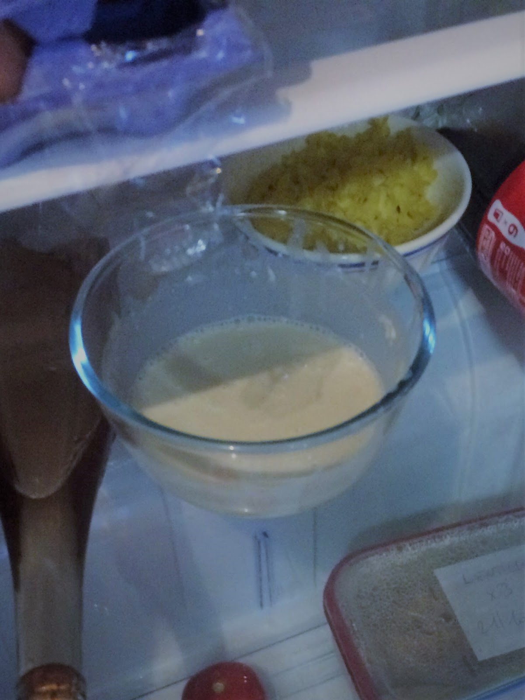
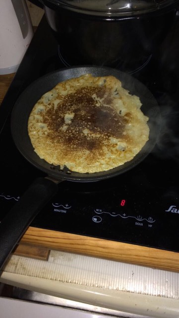

TPE réalisé par Paul, Denis et Alan en 623
Grâce à notre première partie nous avons pu comprendre ce qu’était la cuisine moléculaire. Mais un des but de ce TPE étant de trouver un sens à cette discipline nous avons donc orienté nos recherches vers une maladie lié a une activité vitale pour l'homme: l’alimentation. Ainsi nous avons cherché à comprendre pourquoi une personne atteinte ne pouvait plus ingérer une tranche de pain sans avoir de graves problèmes. A regard de ce que nous avions découvert, nous avons cherché comment les découvertes faites par Hervé This et ses amis pouvaient servir à contourner ces réactions capable d’aller jusqu'à la mort de la personne. Allons donc découvrir cette expérience.
I.Le but de l'expérience
Comme dit précédemment, le but de cette expérience est de réaliser un aliment
pré-existant, tout en utilisant une ou plusieurs méthodes de la cuisine moléculaire.
Le résultat attendu serait de conserver l’apparence, la texture en bouche et le goût
de l’aliment de base tout en veillant à ce que celui ci ne contienne pas les allergènes
responsable de l’allergie. Comme nous avons développé les problèmes liée au gluten et
que nous connaissons son rôle dans la levée des pâtes, nous étions en quête d’une recette
sans gluten.
Le fait que nous ne sommes que de jeunes apprentis et que les cuisiniers spécialisés en
cuisine alimentaire n’étaient pas disposés à nous aider, nous avons porté notre choix
sur une recette de crêpes apparemment simple trouvée sur internet. Cette recette consiste
à remplacer la farine, les oeufs et le lait par de la maizena. Ce procédé étant de la
gélification, cette recette peut être dite de cuisine moléculaire. De plus, elle ne couvre
non pas une mais trois allergies et donc elle est parfaite pour démontrer que la cuisine
ùmoléculaire peut aider les allergiques.
Bien que nos talents de cuisinier s'arrêtent à la cuisson des pâtes, nous avons décidé
de jouer les apprentis sorciers et nous avons cherché quel procédé pourrait donner aux
crèpes une texture plus élastique que celle donnée par les farines sans gluten utilisées.
Nous avions entendu parler de propriété gélifiante de l’agar agar et cela nous a poussé à
en ajouter quelques grammes à notre recette. Bien sûr, nous avons réajusté les quantités de
farine mais nous verrons la recette finale et les propriétés des aliments dans la partie
suivante.
II.La recette
Nous avons donc réussi à trouver une recette sur le site de cuisine le plus
connu : marmiton. La recette pour 6 crêpes à laquelle nous avons rajouté
4 grammes d’agar-agar est la suivante:
- 86 g de maïzena
- 25 cl de lait de soja
- 4 cl d’eau
- 10 g de sucre en poudre
- 1 cuillère à soupe d’huile de tournesol soit 1.5 cl
- 1 cuillère à soupe de rhum
- une pincée de sel, nous prendrons donc cela pour 2 g
D’après nos recherches sur internet une crêpe “normale” contient environ 60 Kcal. C’est donc un plat qui de base n’apportent pas beaucoup de calories. La plupart des calories viennent donc de la garniture des fameuses crêpes. Cela ne nous dérange pas car de nombreuses garnitures sont de base sans lait ou gluten comme les confitures, le sucre ou les légumes pour les crêpes salées. Le tout est de déterminer combien de calories apportent nos crêpes sans aucune garniture.
Quelques calculs permettent de déterminer les calories présentent: notre farine de maïzena apportera 350 Kcal, le lait de soja 4 Kcal seulement, l’eau et le sel aucune, le sucre apportera 40 Kcal, l’huile de tournesol 135 Kcal (c’est une huile très riche) et le rhum 32 Kcal. Le total de calories pour nos 6 crêpes est de 561 Kcal, ce qui fait 93.55 Kcal par crêpes. Donc selon la théories nos crêpes pourtant démunies de gluten, de lait et d’oeufs sont plus caloriques que des crêpes normale. Seulement ces données sont extrêmement variables car chaque crépier ne donne pas la même épaisseur à ses crêpes changeant ainsi leurs masses et donc les calories qu'elles contiennent.
Nous allons maintenant faire nos crêpes pour vérifier nos théories.
III.L’élaboration de nos crepes
La cuisine a beaucoup de points commun avec les sciences comme l'ont prouvé This et Kurti et donc une recette n’est pas très éloignée d’un protocole expérimental. Voici donc notre protocole d’expérience:
- - Mélanger tous les ingrédients dans un récipient, veiller à ne pas laisser de grumeau et avoir une pâte bien homogène. Voici ce que nous avons obtenu après cette étape:
- 
-
- - Laisser reposer au frais (dans un réfrigérateur) pendant une demi-heure. Voici ce que nous avons obtenu après cette étape:
-
- 
-
- - Sortir la pâte du réfrigérateur et la remuer à l’aide d’une cuillière
- - Sur une poêle préchauffée, verser une louche de pâte
- - Quand le côté inférieur est cuit, retourner la crêpe et poursuivre la cuisson
- Résultat:
-
- 
-
Et bien sûr une fois que la crêpes est cuite la retirer du feu !
Au niveau de la texture et de la couleur c’est un perfect d’après eux : nos crêpes ressemblent à de vrais crêpes. C’est un bon départ mais nos testeur ont moins apprécié le goût. D’après eux, la différence entre les deux farines est très marquée. Toutefois ils sont unanimes sur le fait qu’avec une garniture cette différence s’amenuise quitte à disparaître et les adultes ont apprécié la présence de rhum qui amène une nouvelle saveur aux crêpes.
Nous pouvons donc conclure que cette expérience est réussie. Nous avons réussi à concevoir un plat hypoallergénique qui est semblable pour son goût, sa texture et ses valeurs nutritionnelles au plat d’origine. Même si notre recette n’est pas révolutionnaire en matière de haute cuisine, elle est accessible à tous. Nous laisserons donc le rôle de faire des plats exceptionnel au grands chefs de ce monde.